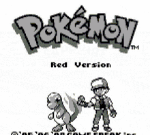

Primera Generación
La región de Kanto es la primera región del mundo Pokémon y es el escenario de los juegos originales Pokémon Rojo y Azul, así como sus remakes Pokémon Rojo Fuego y Verde Hoja. Kanto también es explorada en Pokémon Amarillo.
Juegos destacados:
- Pokémon Rojo y Azul
- Pokémon Rojo Fuego y Verde Hoja

Segunda Generación
La región de Johto es la segunda región del mundo Pokémon, presentada en Pokémon Oro y Plata y sus remakes Pokémon Oro HeartGold y Plata SoulSilver. Johto es conocida por su rica tradición y conexión con la región de Kanto.
Juegos destacados:
- Pokémon Oro y Plata
- Pokémon Cristal
- Pokémon Oro HeartGold y Plata SoulSilver

Tercera Generación
La región de Hoenn es la tercera región del mundo Pokémon, introducida en Pokémon Rubí y Zafiro y revisitada en Pokémon Esmeralda.
Juegos destacados:
- Pokémon Rubí y Zafiro
- Pokémon Esmeralda